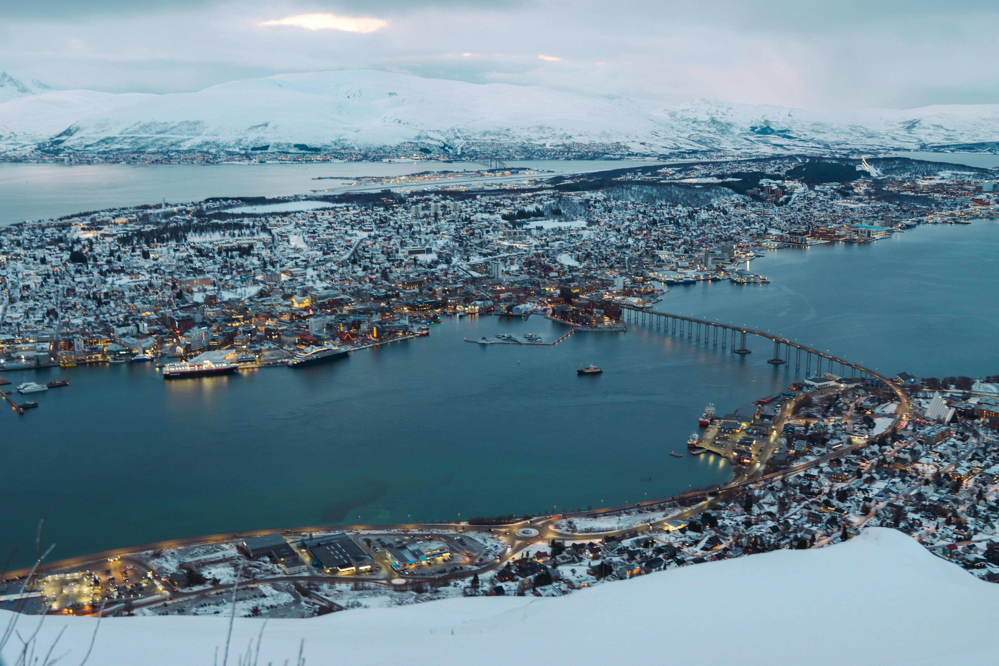
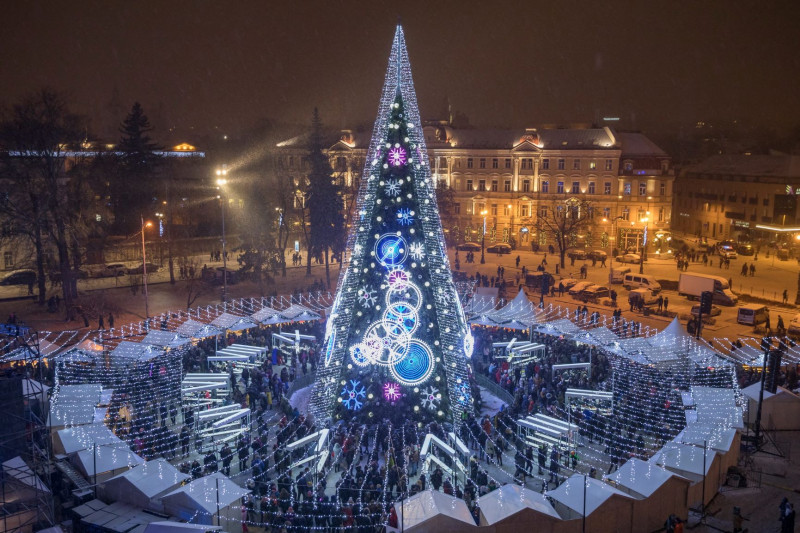
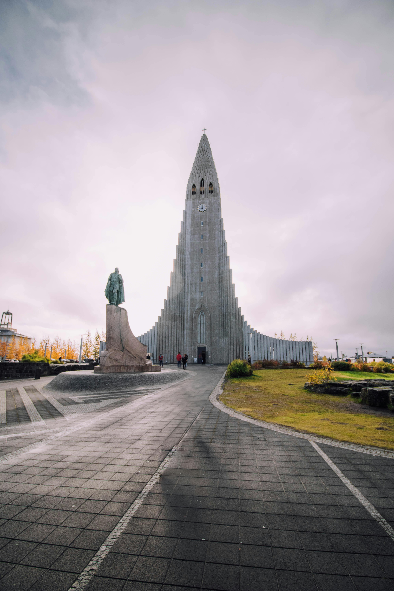
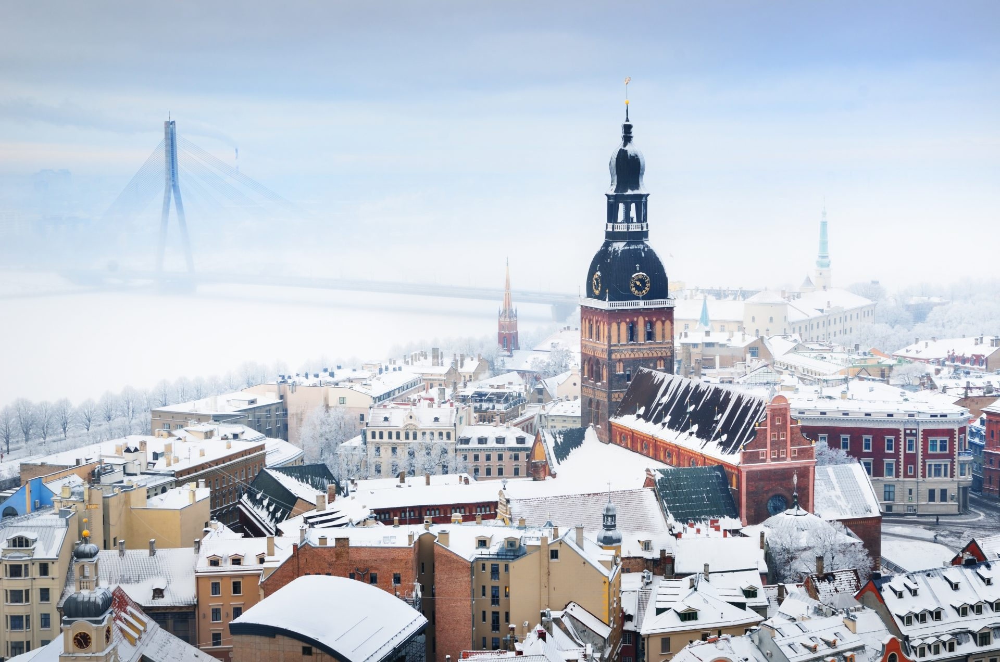
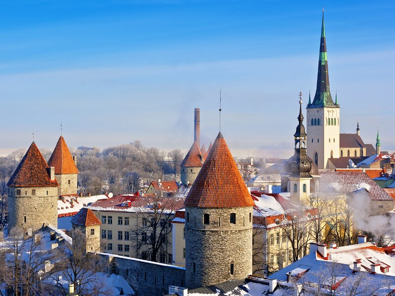
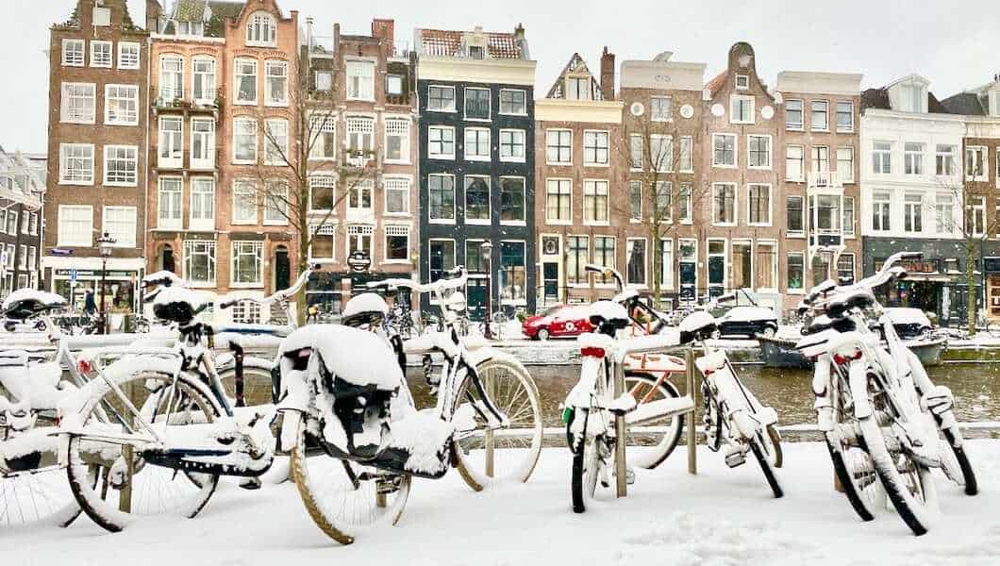
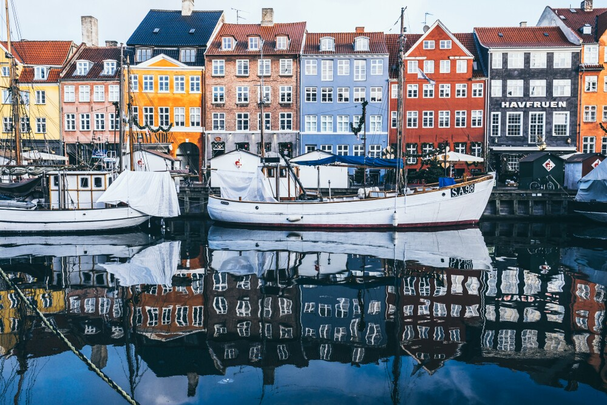
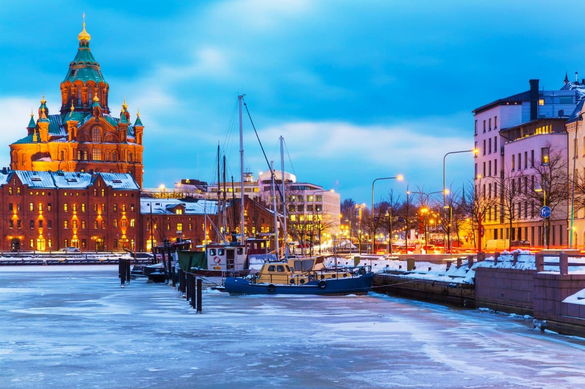
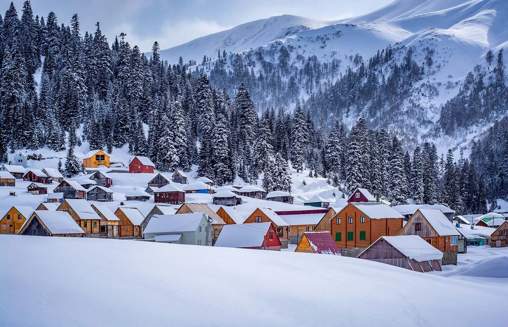
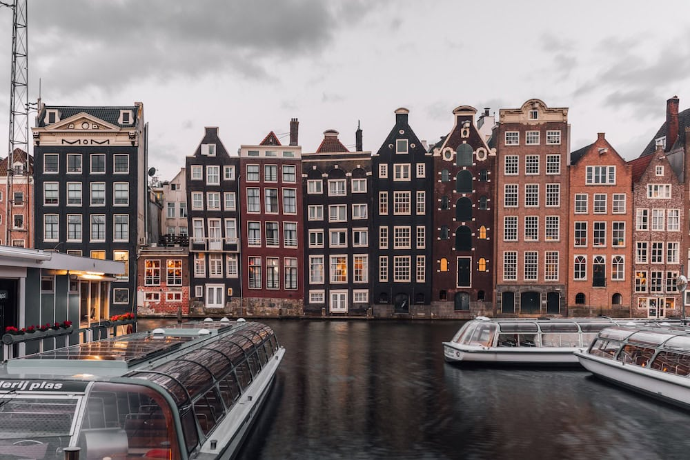

Right, so I know what you're thinking – winter holidays usually mean beach resorts and trying to escape the British cold. But hear me out. There's something absolutely brilliant about embracing the cold, and over the past few years, Hannah and I have become proper winter travel addicts. Trust me, there's nothing quite like wrapping up warm, exploring snowy cities, and rewarding yourself with mulled wine or hot chocolate afterwards.
Here's our rundown of the best cozy winter destinations we've visited (and a few we're dying to tick off the list).
Places We've Been
Tromsø, Norway – The Arctic Adventure
This one's special. Tromsø is properly in the Arctic Circle, and it's where we went all-in on chasing the Northern Lights. We're talking driving from Tromsø all the way to the Finnish border in freezing temperatures, just to catch a glimpse of those dancing green lights. Spoiler: totally worth it.
Beyond the aurora hunting, Tromsø's got some decent museums if you fancy learning about Arctic history, and the food scene is surprisingly good – lots of fresh seafood and reindeer dishes if you're feeling adventurous.
What else you can do: If we'd had more time, I'd have loved to try whale watching or go husky sledding. Reindeer sledding is also a big thing up there in winter. Basically, if you want to feel like you're in a proper winter wonderland film, Tromsø delivers.
Vilnius, Lithuania – Christmas Market Vibes
Vilnius in winter is like stepping into a Christmas card. The festive atmosphere at the Christmas markets is unreal – wooden stalls selling everything from handmade crafts to hot cider, and the whole Old Town is covered in snow. We spent ages just wandering through the cobbled streets, taking it all in.
Don't miss Gediminas Castle Tower – the climb up is worth it for the panoramic views over the city, especially when everything's dusted with snow. It's one of those cities where you can just get lost walking around and stumble upon something brilliant every corner you turn.
Reykjavik, Iceland – Land of Fire and Ice
Iceland was an absolute game-changer for us. Reykjavik itself is a cool little city, but the real magic happens when you venture out. We chased the Northern Lights again (yes, we're obsessed), and honestly, seeing them dance over Iceland's dramatic landscapes was unforgettable.
The geothermal spas are a must – we went to the Sky Lagoon, and floating in hot water while it's freezing cold outside is genuinely one of life's best experiences. We also did a Golden Circle tour, which took us to incredible waterfalls and even some ice caves. When the weather got a bit too much, we ducked into museums like the Perlan Museum and Harpa Concert Hall, which are both class.
Riga, Latvia – Underrated Winter Gem
Riga doesn't get enough credit, in my opinion. The Old Town is stunning in winter, with its medieval architecture and cozy cafes perfect for warming up. The Christmas markets here are brilliant too – less touristy than some of the bigger cities but just as magical. Plus, Latvian food is hearty and perfect for cold weather. Grey peas with bacon, anyone?
Tallinn, Estonia – Fairytale Feels
Just across from Latvia, Tallinn is like something out of a fairytale. The medieval Old Town looks even more enchanting covered in snow, and the Christmas market in Town Hall Square is one of the best we've been to. We spent our time hopping between cafes, exploring the city walls, and stuffing our faces with traditional Estonian pastries. Top winter city break, hands down.
Amsterdam, Netherlands – Canals and Cozy Cafes
Amsterdam in winter hits different. Sure, it's cold, but the canals, the twinkling lights, and the endless supply of cozy brown cafes make it perfect. We spent our days cycling around (yes, even in the cold – very Dutch of us), visiting museums when it got too Baltic, and drinking way too much coffee. Ice skating on the canals is a thing if you're lucky enough to catch a proper freeze, though we weren't.
Copenhagen, Denmark – Hygge Central
If you don't know about hygge, Copenhagen will teach you. It's all about that cozy, warm feeling, and the Danes have absolutely nailed it. Tivoli Gardens in winter is magical with all the lights and Christmas decorations, and Nyhavn looks incredible with a dusting of snow.
We spent a lot of time in cafes (obviously), tried way too much Danish pastry, and explored the city's cool design shops. Even in the cold, Copenhagen just feels... nice. Can't really describe it better than that.
Places We're Dying to Visit
Helsinki, Finland
This is high on our list for next winter. I've heard Helsinki's got a brilliant mix of modern Scandinavian design and winter activities, plus they've got those traditional Finnish saunas everywhere. Hannah's already planning which Christmas markets we'll hit, and I'm very much up for trying some proper Finnish food. Ice swimming after a sauna session? Might be mad enough to give it a go.
Switzerland

Switzerland in winter is basically the dream, isn't it? I'm picturing snow-covered Alps, cozy mountain chalets, and maybe even attempting to ski without making a complete fool of myself. Hannah wants to do the Christmas markets in Zurich or Basel, and I'm not going to argue with that. Fondue by a fireplace? Sign me up.
The Great Debate: Japan vs. Georgia

I'm voting Japan. Winter in Japan looks absolutely incredible – think snowy temples in Kyoto, skiing in Hokkaido, relaxing in hot springs (onsens), and eating our way through Tokyo. Plus, there's something about experiencing winter in a completely different culture that really appeals to me. Japanese winter illuminations are supposed to be unreal too.
Hannah's pick is Georgia. She's been banging on about Georgian wine, the food (khachapuri, apparently), and how Tbilisi looks stunning in winter. Fair play, I've seen the photos and it does look class. Plus, it's way cheaper than most European destinations, which means more money for wine and food. She might be onto something, to be honest.
We haven't decided yet, but either way, I reckon we're onto a winner.
Final Thoughts
Look, I get that winter travel isn't everyone's cup of tea. But there's something about exploring cities when they're all lit up for Christmas, when there are fewer tourists, and when you've got an excuse to spend all day in cafes and pubs warming up. Plus, if you're lucky enough to catch the Northern Lights or see a city covered in fresh snow, it's genuinely magical.
So if you're thinking about where to go this winter, give these places a proper look. Hannah and I have loved every freezing minute of our winter adventures, and I reckon you will too.
Now, if you'll excuse me, I need to go convince Hannah that Japan should definitely be our next trip...